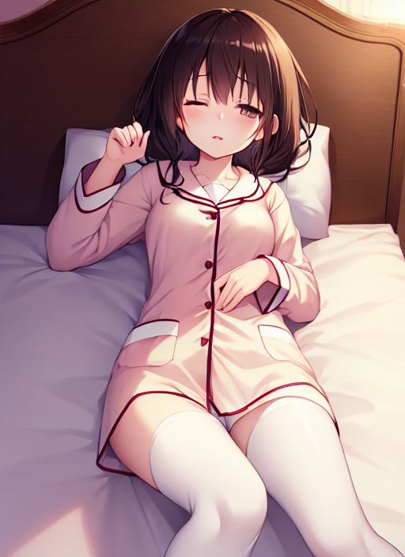

風邪
一人の青年がベッドで寝ている。 青年の髪はボサボサヘアの茶髪で、肌は日焼けによって黒くなっている。 青年の名前は瀬戸あつき（18）といい、前日からの風邪によって寝込んでいるのである。
「くっそ・・・こうも寝てばかりじゃ退屈でしょうがねぇ・・・。ゲームしてぇなぁ・・・。」
グチグチとそう呟いていると、部屋の扉がコンコンと鳴った。
「誰だ？」
あつきがそう言うと扉がギギィッと開き、お盆を持った少年が入ってきた。 少年は瀬戸響月（14）といい、あつきの弟である。
「兄貴、具合はどう？」
「なんだ、お前かよ。何しに来たんだ？」 「母さんに頼まれて、お粥と薬を持ってきたんだよ。ほら。」
響月はそう言うと、持っていたお盆を床に置いた。 お盆の上には茶碗に盛られた美味しそうなお粥とその味付けに使う味付け海苔や梅干し、それから錠剤が一つ置いてあった。
「ちぇ、またお粥かよ。いいかげん飽きてきたぜ。」
「文句言わないでよ。兄貴は今、具合が悪いんだから。」
「へいへい。」
「それじゃあ、食べ終わったらいつもの様に廊下に出しといてね。」
そう言って響月は、あつきの部屋を出た。
数分後、あつきはお粥を食べ終わった。
「ふぅ・・・。」
あつきは一息つくと、お盆に残った錠剤を手に取ってゴクッと呑み込んだ。
「さてと・・・寝るか。」
あつきはそう言うとお盆を廊下に出し、自分はベッドに戻って横になった。
（早く良くなりてぇなぁ・・・こうも風邪が続いてるんじゃ、暇で暇でしょうがねぇ・・・。）
そう思いながら天井を仰いでいたあつきだったが、すぐにグーグーと眠りに就いた。
と、その時だった。 あつきの茶髪が侵食するかのように黒く染まったかと思うと、サラッと勢い良く伸びてロングヘアとなった。 更に、日に焼けた肌が脱色するかのように白くなったかと思うと、顔はプニプニとした頬を持った真ん丸顔になり、目や鼻などの顔のパーツはそれに合った可愛らしいものに変化した。 また、高かった身長はシュルルルと縮んでいき、ガシッとした頼りがいのある太く長い腕や脚は細く短いものに。 ガッシリとした胸はペタンと平たくなり、筋肉質なお尻はプルンと柔らかくなる。
「う・・・うぅ・・・んん・・・ん～・・・。」
口から漏れる声も、太い声から透き通るかのような高い声に変わっていった。
少しすると、あつきに起こった事は治まった。 しかし、ベッドにあつきの姿はなく、代わりに色白肌で黒髪ロングの10歳位の少女がブカブカの男物の服に身を包み、スースーと寝息を立てていた。 そう、この少女こそあつきなのである。 すると今度は、そのあつきの着ている服がドロドロと液体の様に溶けたかと思うと、あつきの身体をサッと包み込んで可愛いパジャマとなった。 また、あつきの寝ていたベッドがグニャッと揺らめいたかと思うと、ピンクの毛布にピンクの枕とピンク尽くしのベッドへと変貌し、それに合わせるかのように、殺風景だった部屋の中は明るい雰囲気の漂う女の子の部屋へと変わった。
「ん・・・うにゅぅ・・・。」
しばらくしてあつきは目を覚まし、上半身を起こすとキョロキョロと辺りを見渡した。
「あれぇ・・・・・なんか・・・変な感じがする・・・なんでだろ？」
あつきはその違和感がなんなのか考え始めたが、徐々にその違和感は消えていった。 更に、あつきの今まで生きてきた記憶が消え、代わりに「神埼明菜」という少女として今まで生きてきたという記憶が頭の中に入っていった。
「う～ん・・・気のせい・・・かな？・・・・・うん、気のせいだ。気のせいだから寝よっと。」
あつきはそう言って、再びバタッとベッドに寝転んだ。
数分後...
コンコン
「どーぞー。」
あつきがそう言うと、扉が開いて響月が入ってきた。
「あ、お兄ちゃん！」
「明菜、具合はどう？」
「う～ん、だいぶ落ち着いてきたかな？」
「そっか。でも完全に良くなるまで、もう少し寝てないとな。」
「え～？もうずっと寝てばかりいたから、暇だよ～。お兄ちゃんとゲームしたいよ～。」
「大丈夫だよ。明菜の風邪が治ったら、一緒にゲームしてあげるから。」
「本当！？」
「うん、本当だよ。」
「わーい！お兄ちゃんだーい好き！」
あつきだった少女・明菜は、ギューッと響月に抱きついた。
（人を思い描いた通りの姿に変える変身薬・・・最初は信じてなかったけど、試しに買って使ってみたらこんなに凄い物だなんて・・・。これさえあれば・・・ふふふ・・・。）
響月は自分に抱きつくあつきを見ながら、ニヤッと少し悪そうな笑みを浮かべた。